에너지관리산업기사 (2013-03-10 기출문제)
1과목: 열역학 및 연소관리
1. 부하 변동에 따른 연료량의 조절범위가 가장 큰 버너의 형식은?
- 유압식 버너
- 회전식 버너
- 고압공기 분무식 버너
- 저압증기 분무식 버너
(정답률: 86%)

2. 수소 31.9%, 일산화탄소 6.3%, 메탄 22.3%, 에틸렌 3.9%, 이산화탄소 3.8%, 질소 31.8%의 조성을 갖는 가스 연료의 고위발열량은 약 몇 MJ/Sm3인가?
- 10.5
- 11.3
- 14.2
- 16.3
(정답률: 32%)
3. 거리의 제한이 없고 주위 환경오차가 적으나 연돌 상부의 지름 크기에 따라 측정오차가 큰 매연 측정 방법은?
- 바카락 스모크 테스터
- 망원경식 매연 농도계
- 광전관식 매연 농도계
- 링겔만 매연 농도계
(정답률: 75%)
4. 연소의 3요소에 해당하지 않는 것은?
- 가연물
- 인화점
- 산소공급원
- 점화원
(정답률: 87%)
5. 기체연료의 일반적인 특징에 대한 설명으로 가장 거리가 먼 것은?
- 저장하기 쉽다.
- 열효율이 높다.
- 점화 및 소화가 간단하다.
- 연소용 공기 예열에 의해 저발열량이라도 전열효율을 높일 수 있다.
(정답률: 87%)
6. 기체연료의 연소에는 층류확산연소, 난류확산연소 및 예혼합연소가 있다. 이 중 가장 고부하 연소가 가능한 연소방식은?
- 층류확산연소
- 난류확산연소
- 예혼합연소
- 모두 가능하다.
(정답률: 89%)
7. 질량조성비가 탄소 0.87, 수소 0.1, 황 0.03인 연료가 있다. 이론공기량(Sm3/kg)은?
- 7.2
- 8.3
- 9.4
- 10.5
(정답률: 62%)
8. 다음 기체연료 중 고위발열량(MJ/Sm3)이 가장 큰 것은?
- 고로가스
- 천연가스
- 석탄가스
- 수성가스
(정답률: 75%)
9. 입경이 작아질수록 석탄의 착화온도의 변화를 나타내는 것으로 옳은 것은?
- 착화온도가 높아진다.
- 착화온도가 낮아진다.
- 입경의 크기와 무관하다.
- 착화온도의 차이가 없다.
(정답률: 71%)
10. 일반적인 중유의 인화점 범위로서 가장 옳은 것은?
- 60~150℃
- 300~350℃
- 520~580℃
- 730~780℃
(정답률: 77%)
11. 석탄을 공업분석하였더니 수분이 3.35%, 휘발분이 2.65%, 회분이 25.50%이었다. 고정탄소분은 몇 %인가?
- 37.69
- 49.48
- 59.87
- 68.50
(정답률: 66%)
12. 다음 조성의 수성가스 연소 시 필요한 공기량은 약 몇 Sm3/Sm3인가? (단, 공기비는 1.25, 사용 공기는 건조공기이다.)
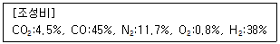
- 0.97
- 1.22
- 2.42
- 3.07
(정답률: 51%)
13. 다음 중 풍화의 영향이 크지 않은 것은?
- 석탄의 휘발분
- 석탄의 고정탄소
- 석탄의 회분
- 석탄의 수분
(정답률: 64%)
14. 다음 중 매연의 방지조치로서 옳지 않은 것은?
- 공기비를 최소화하여 연소한다.
- 보일러에 적합한 연료를 선택한다.
- 연료가 연소하는 데 충분한 시간을 준다.
- 연소실 내의 온도가 내려가지 않도록 공기를 적정하게 보낸다.
(정답률: 85%)
15. 고체연료인 석탄, 장작 등이 불꽃을 내면서 타는 형태의 연소로서 가장 옳은 것은?
- 확산연소
- 증발연소
- 분해연소
- 표면연소
(정답률: 73%)
16. 회분이 연소에 미치는 영향에 대한 설명으로 옳지 않은 것은?
- 연소실의 온도를 높인다.
- 통풍에 지장을 주어 연소효율을 저하시킨다.
- 보일러 벽이나 내화벽돌에 부착되어 장치를 손상시킨다.
- 용융 온도가 낮은 회분은 클링커를 작용시켜 통풍을 방해한다.
(정답률: 81%)
17. 탄소 84.0%, 수소 13.0%, 황 2.0%, 질소 1.0%인 중유 1kg을 15Sm3의 공기로 완전연소시켰을 때의 습연소 배기가스 중의 SO2는 약 몇 ppm인가? (단, 황은 연소하여 모두 SO2로 되었다.)
- 700
- 740
- 890
- 1,000
(정답률: 60%)
18. 다음 중 이론공기량에 대하여 가장 올바르게 나타낸 것은?
- 완전 연소에 필요한 1차 공기량
- 완전 연소에 필요한 2차 공기량
- 완전 연소에 필요한 최소 공기량
- 완전 연소에 필요한 최대 공기량
(정답률: 76%)
19. 다음 중 보염장치(保炎裝置)가 아닌 것은?
- 에어레지스터
- 버너타일
- 컴버스터
- 크레이머
(정답률: 75%)
20. 프로판 1Sm3을 이론공기량으로 완전 연소시 건연소가스량은?
- 3.81Sm3
- 18.81Sm3
- 21.81Sm3
- 25.81Sm3
(정답률: 49%)
2과목: 계측 및 에너지진단
21. 공기 냉동 cycle은 어느 cycle의 역 cycle인가?
- Otto
- Diesel
- Sabathe
- Brayton
(정답률: 80%)
22. 오토사이클에 대한 설명으로 틀린 것은?
- 등엔트로피 압축과정이 있다.
- 일정한 압력에서 열방출을 한다.
- 압축비가 클수록 이론적인 열효율은 증가한다.
- 효율은 압축비의 함수이다.
(정답률: 50%)
23. 냉동 사이클의 작업 유체(Working Fluid)인 냉매(Refrigerant)의 구비조건으로 가장 거리가 먼 것은?
- 증발잠열이 클 것
- 임계 온도가 낮을 것
- 응축 압력이 낮을 것
- 열전달 특성이 좋을 것
(정답률: 69%)
24. 체적 20m3의 용기 내에 공기가 채워져 있으며, 이때 온도는 25℃이고, 압력은 200kPa이다. 용기 내의 공기온도를 65℃까지 가열시키는 경우에 소요 열량은 약 몇 kJ인가? (단, R=0.287kJ/kg·K, Cv=0.71kJ/kg·K이다.)
- 240
- 330
- 1,330
- 2,840
(정답률: 60%)
25. 엔트로피에 대한 설명 중 틀린 것은?
- 엔트로피는 열역학적 상태량이다.
- 계의 엔트로피 변화는 가역 및 비가역 과정에서 경로와 무관하다.
- 엔트로피는 모든 과정에 대하여 전달 열량을 온도로 나눈 것으로 정의된다.
- 몰리에선도는 엔탈피와 엔트로피 관계를 나타내는 선도이다.
(정답률: 47%)
26. 압력 0.2MPa, 온도 200℃의 어떤 기체(이상기체) 2kg이 가역단열과정으로 팽창하여 압력이 0.1MPa로 변한다. 이 기체의 최종온도는 약 몇 ℃인가? (단, 이 기체의 비열비는 1.4이다.)
- 92
- 115
- 365
- 388
(정답률: 57%)
27. 다음은 물의 압력-온도 선도를 나타낸 것이다. 임계점은 어디를 말하는가?
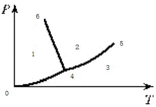
- 점 0
- 점 4
- 점 5
- 점 6
(정답률: 85%)
28. 압력 2.5MPa일 때 포화수 엔탈피는 960kJ/kg, 포화수증기의 엔탈피는 2,800kJ/kg이다. 이때 동일 압력하에서 습증기 5kg의 엔탈피는 10,000kJ이다. 이 습증기의 건도는?
- 0.27
- 0.37
- 0.47
- 0.57
(정답률: 36%)
29. 다음 중 같은 액체에 대한 표현이 아닌 것은?
- 밀도가 800kg/m3이다.
- 0.2m3의 질량이 160kg이다.
- 비중량이 800N/m3이다.
- 비체적이 0.00125m3/kg이다.
(정답률: 73%)
30. 고열원의 온도 800K, 저열원의 온도 300K인 두 열원 사이에서 작동하는 이상적인 카르노 사이클이 있다. 고열원에서 사이클에 가해지는 열량이 120kJ이면 사이클 일은 몇 kJ인가?
- 60
- 75
- 85
- 120
(정답률: 67%)
31. 발열량이 47,300kJ/kg인 휘발유를 시간당 40kg씩 연소시키는 기관의 열효율이 30%라면, 이 관의 발생동력은 몇 kW인가?
- 158
- 527
- 1,548
- 1,752
(정답률: 42%)
32. 그림은 초기 체적이 V1상태에 있는 피스톤이 외부로 일을 하여 최종적으로 체적이 Vf인 상태로 된것을 나타낸다. 외부로 가장 많은 일을 한 과정은?
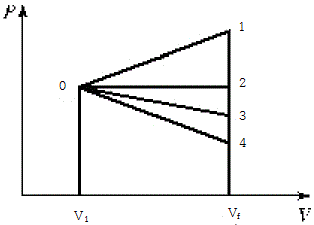
- 0-1 과정
- 0-2 과정
- 0-3 과정
- 0-4 과정
(정답률: 86%)
33. 보일러에서 포화증기의 압력을 올리면 증기의 잠열은 어떻게 변하는가?
- 증가한다.
- 변하지 않는다.
- 감소한다.
- 상황에 따라 다르다.
(정답률: 72%)
34. 압력이 300kPa, 체적이 0.5m3인 공기가 일정한 압력에서 체적이 0.7m3으로 팽창했다. 이 팽창 중에 내부에너지가 50kJ 증가하였다면 팽창에 필요한 열량은 몇 kJ인가?
- 50
- 60
- 100
- 110
(정답률: 61%)
35. 관로에서 외부에 대한 열의 출입이 없고 욉에 대한 일과 유압속도를 무시할 때, 유출속도 W2에 대한 식으로 옳은 것은? (단, i는 단위질량당 엔탈피이며, 1,2는 각각 입구와 출구를 의미한다.)
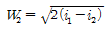
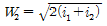
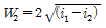
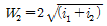
(정답률: 68%)
36. 이상기체에 대한 설명으로 가장 거리가 먼 것은?
- 기체분자 간의 인력을 무시할 수 있고 이상기체의 상태방정식을 만족하는 기체
- Boyle-Charles의 법칙(Pv/T=Const)을 만족하는 기체
- 분자 간에 완전 탄성충돌을 하는 기체
- 일상생활에서 실제로 존재하는 기체
(정답률: 87%)
37. 습증기의 건도를 잘 설명한 것은?
- 습증기 1kg중에 포함되어 있는 액체의 양을 습증기 1kg중에 호함된 건포화증기 양으로 나눈 값
- 습증기 1kg중에 포함되어 있는 건포화증기의 양을 습증기 1kg 중에 포함된 액체 양으로 나눈 값
- 습증기 1kg 중에 포함되어 있는 액체의 양을 습증기 1kg으로 나눈 값
- 습증기 1kg 중에 포함되어 있는 건포화증기의 양을 습증기 1kg으로 나눈 값
(정답률: 79%)
38. 물에 대한 임계점에서의 온도와 압력을 옳게 표현한 것은?
- 273.16℃, 0.61kPa
- 273.16℃, 221bar
- 374.15℃, 0.61kPa
- 374.15℃, 221bar
(정답률: 61%)
39. 폴리트로픽(Polytropic) 과정에서 폴리트로픽 지수가 무한히 큰 수(n=∞)인 경우는 다음 중 어느 과정에 가장 가까운가?
- 정압(Constant Pressure) 과정
- 정적(Constant Volume) 과정
- 등온(Constant Temperature) 과정
- 단열(Adiabatic) 과정
(정답률: 83%)
40. 물의 기화열은 1기압에서 2,257kJ/kg이다. 1기압하에서 포화수 1kg을 포화수증기로 만들 때 물의 엔트로피의 변화는 몇 kJ/K인가?
- 0
- 6.⑤
- 539
- 2,257
(정답률: 55%)
3과목: 열설비구조 및 시공
41. 피토관을 사용하여 해수의 유속을 측정하였떠니 마노메타의 차가 10cm 이었다. 이때 유속은 약 몇 m/s인가?
- 1.4
- 1.96
- 14
- 18.6
(정답률: 59%)
42. 프로세스 제어의 난이 정도를 표시하는 낭비시간(Dead Time:L)과 시정수(T)와의 비(
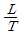
)는 어떤 성질을 갖는가?- 작을수록 제어가 용이하다.
- 클수록 제어가 용이하다.
- 조작정도에 따라 다르다.
- 비에 관계없이 일정하다.
(정답률: 75%)
43. 휘도를 표준온도의 고온 물체와 비교하여 온도를 측정하는 온도계는?
- 액주온도계
- 광고온계
- 열전대온도계
- 기체팽창온도계
(정답률: 74%)
44. 지름이 200mm인 관에 비중이 0.9인 기름이 평균속도 5m/s로 흐를 때 유량은 약 몇 kg/s인가?
- 14
- 15.7
- 141.3
- 157
(정답률: 54%)
45. 다음 중 화학적 가스분석계가 아닌 것은?
- 오르자트식
- 연소식
- 자동화학식 CO2계
- 밀도식
(정답률: 75%)
46. 자동제어에 대한 설명으로 틀린 것은?
- 블록선도(Block Diagram)란 자동제어계의 각 요소의 명칭이나 특성을 각 블록 내에 기입하고, 신호의 흐름을 표시한 계통도이다.
- 제어량은 출력이라고도 하며, 제어하고자 하는 양으로서 목표치와 같은 종류의 양이다.
- 비교부란 검출한 제어량과 조작량을 비교하는 부분으로 그 오차를 제어편차라 한다.
- 외란이란 제어계의 상태를 혼란케 하는 외적 작용이다.
(정답률: 67%)
47. “CO+H2” 분석계란 어떤 가스를 분석하는 계기인가?
- 과잉공기계
- CO2계
- 미연가스계
- N2계
(정답률: 71%)
48. 밀폐 고압탱크나 부식성 탱크의 액면 측정에 가장 적절한 액면계는?
- 차압식
- 플로트(Float)식
- 노즐식
- 감마(γ)선식
(정답률: 67%)
49. 전기저항 온도계에서 측온저항체의 구비조건으로 틀린 것은?
- 물리·화학적으로 안정하고 동일 특성을 갖는 재료이어야 한다.
- 일정 온도에서 일정한 저항을 가져야 한다.
- 저항온도계수가 적고 규칙적이어야 한다.
- 내열성이 있어야 한다.
(정답률: 71%)
50. 액주식 압력계에 사용하는 액체에 필요한 특성이 아닌 것은?
- 점성이 클 것
- 열팽창계수가 작을 것
- 모세관 현상이 작을 것
- 일정한 화학성분을 가질 것
(정답률: 80%)
51. 차압식 유량계의 압력손실의 크기를 바르게 표기한 것은?
- Flow-Nozzle ＞ Venturi ＞Orifice
- Venturi ＞ Flow-Nozzle ＞ Orifice
- Orifice ＞ Venturi ＞ Flow-Nozzle
- Orifice ＞ Flow-Nozzle ＞ Venturi
(정답률: 69%)
52. 0℃에서 수은주의 높이가 760mm에 상당하는 압력을 1표준 기압 또는 대기압이라 할 때 다음 중 1atm과 다른 것은?
- 1,013mbar
- 101.3Pa
- 1.033kg/cm2
- 10.332mH2O
(정답률: 75%)
53. 다음 중 온도를 높여주면 산소 이온만을 통과시키는 성질을 이용한 가스분석계는?
- 세라믹 O2계
- 갈바닉 전자식 O2계
- 자기식 O2계
- 적외선 가스분석계
(정답률: 75%)
54. 통풍력의 단위로 사용하기에 가장 적합한 것은?
- 수은주(mmHg)
- 수주(mmH2O)
- 수주(mH2O)
- kg/cm2
(정답률: 69%)
55. 다음 중 보일러의 화염온도를 측정하는 데 가장 적합한 온도계는?
- 알코올온도계
- 광고온계
- 수은유리온도계
- 표면온도계
(정답률: 84%)
56. 다음 중 구조상 보상도선을 반드시 사용하여야 하는 온도계는?
- 열전대식 온도계
- 광고온계
- 방사온도계
- 전기식 온도계
(정답률: 77%)
57. 다음과 같은 압력측정장치에서 용기압력은 어떻게 표시되는가? (단, 유체의 밀도 ρ, 중력가속도 g로 표시한다.)
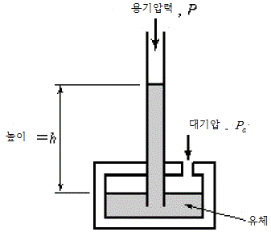
- P=Pa
- P=ρgh
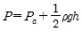
- P=Pa+ρgh
(정답률: 68%)
58. 방사온도계로 금속의 온도를 측정하였더니 970℃이었다. 전방사율이 0.84일 때의 진온도는 약 몇 ℃인가?
- 815
- 970
- 1,025
- 1,298
(정답률: 50%)
59. 보일러 출구의 배기가스를 측정하는 세라믹 O2계의 특징이 아닌 것은?
- 응답이 신속하다.
- 연속측정이 가능하다.
- 측정부의 온도유지를 위하여 온도조절용 히터가 필요하다.
- 분석하고자 하는 가스를 흡수 용액에 흡수시켜, 전극으로 그 용액에서의 굴절률 변화를 이용하여 O2농도를 측정한다.
(정답률: 60%)
60. 다음 중 서보(Servo)기구의 제어량은?
- 압력
- 유량
- 온도
- 물체의 방향
(정답률: 64%)
4과목: 열설비취급 및 안전관리
61. 다음 중 큐폴라의 구성품이 아닌 것은?
- 코크스 배드(Cokes Bad)
- 트라이언(Trunnion)
- 우구(Tuyere)
- 윈드박스(Wind Box)
(정답률: 60%)
62. 전형적으로 흑운모의 변질작용으로 생성되는 광물로서 급열처리에 의하여 겉보기 비중과 열전도율이 낮아 단열재로 주로 사용되는 광물은?
- 질석(Vermiculite)
- 펄라이트(Perlite)
- 팽창열함(Expanded Shale)
- 팽창점토(Expanded Clay)
(정답률: 67%)
63. 어떤 내화벽돌의 열전도율이 0.8kca/m·h·℃인 재질의 평면벽 양쪽 온도가 800℃와 200℃이며 이 벽을 통한 열전달률이 1,500kcal/m℃·h·℃일 때 벽의 두께는 약 몇 cm인가?
- 25
- 32
- 43
- 49
(정답률: 55%)
64. 2개 이상의 엘보(Elbow)로 나사의 회전을 이용하여 온수 또는 저압증기용 배관에 사용하는 신축이음방식은?
- 루프형(Loop Type)
- 벨로즈형(Bellows Type)
- 슬리브형(Sleeve Type)
- 스위블형(Swivel Type)
(정답률: 83%)
65. 단열벽돌을 요로에 사용할 때의 특징에 대한 설명으로 틀린 것은?
- 축열 손실이 적어진다.
- 전열 손실이 적어진다.
- 노내 온도가 균일해지고, 내화물의 배면에 사용하면 내화물의 내구력이 커진다.
- 효과적인 면도 적지 않으나 가격이 비싸므로 경제적인 이익은 없다.
(정답률: 83%)
66. 내화 몰탈의 종류가 아닌 것은?
- 열경성 몰탈
- 기경성 몰탈
- 압경성 몰탈
- 수경성 몰탈
(정답률: 66%)
67. 열전도에 대한 설명 중 옳지 않은 것은?
- 전도에 의한 열전달 속도는 전열면적에 비례한다.
- 열전도율은 온도의 함수이다.
- 열전도율은 물질 특유의 상수로 코사인 법칙이라고 한다.
- 전도에 의한 열전달 속도는 온도구배에 비례한다.
(정답률: 63%)
68. 열유체의 물성을 표시하는 무차원인 Prandtl수는? (단, ρ는 유체의 밀도, c는 유체의 비열, μ는 점성계수, λ는 열전도율이다.)
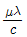
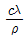
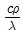
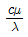
(정답률: 70%)
69. 탄화규소질 내화물에 대한 설명으로 옳은 것은?
- 알칼리 조건에서 사용이 제한된다.
- 소결성이다.
- 고온에서 부피 변화가 적다.
- 하중연화온도가 낮다.
(정답률: 51%)
70. 다음 중 보온재의 보온효과에 가장 큰 영향을 미치는 것은?
- 보온재의 화학성분
- 보온재의 조직
- 보온재의 광물조성
- 보온재의 내화도
(정답률: 61%)
71. 도시가스 연소식 노통연관보일러에 설치하는 증기압력계의 적정한 눈금은 어느 범위에 있어야 하는가?
- 사용압력의 1.5~3배
- 최고사용압력의 1.5~3배
- 사용압력의 2~3배
- 최고사용압력의 2~3배
(정답률: 76%)
72. 공기예열기의 효과에 대한 설명 중 틀린 것은?
- 수분이 많은 저질탄의 연소에 유효하다.
- 폐열을 이용하므로 열손실이 적게 된다.
- 노내온도를 높이고, 노내의 열전도를 좋게 한다.
- 공기의 온도가 높게 되므로 통풍저항이 감소한다.
(정답률: 61%)
73. 가마 내의 온도를 비교적 균일하게 할 수 있어 도자기, 내화벽돌의 소성에 적합한 가마는?
- 직염식 가마
- 승염식 가마
- 횡염식 가마
- 도염식 가마
(정답률: 75%)
74. 길이 방향으로 배치된 관 구멍부의 효율(η)은 피치가 같을 경우, 어떤 식으로 나타낼 수 있는가? (단, P는 관 구멍의 피치[mm], d는 관 구멍의 지름[mm]이다.)
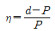
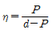
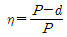
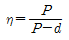
(정답률: 70%)
75. 다음 중 주철관의 접합방법으로 사용되지 않는 것은?
- 소켓접합
- 플랜지접합
- 기계식 접합
- 용접접합
(정답률: 70%)
76. 유리를 연속적으로 대량 용융하여 규모가 큰 판유리 등의 대량생산용에 가장 적당한 가마는?
- 회전 가마
- 탱크 가마
- 터널 가마
- 도가니 가마
(정답률: 67%)
77. 재생식 공기예열기로서 일반 대형보일러에 주로 사용되는 것은?
- 엘레멘트 조립식 공기예열기
- 융그스트롬식 공기예열기
- 판형 공기예열기
- 관형 공기예열기
(정답률: 80%)
78. 돌로마이트질 내화물의 주요 화학 성분은?
- SiO2
- SiO2, Al2O3
- Al2O3
- CaO, MgO
(정답률: 69%)
79. 크롬질 벽돌의 특징에 대한 설명으로 옳지 않은 것은?
- 내화도가 높고 하중연화점이 낮다.
- 마모에 대한 저항성이 크다.
- 온도 급변에 잘 견딘다.
- 고온에서 산화철을 흡수하여 팽창한다.
(정답률: 56%)
80. 노벽이 두께 24cm의 내화벽돌, 두께 10cm의 절연벽돌 및 두께 15cm의 적색벽돌로 만들어질 때 벽 안쪽과 바깥쪽 표면 온도가 각각 900℃, 90℃라면 열손실은 약 몇 kcal/h·m2인가? (단, 내화벽돌, 절연벽돌 및 적색벽돌의 열전도율은 각각 1.2, 0.15, 1.0kcal/h·m·℃이다.)
- 351
- 797
- 1,501
- 4,⑤7
(정답률: 50%)